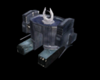
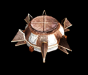
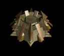

Resource Processor
Each of the three races has a unique RP design. The primary difference between the RPs is the difference in movment style. Human RPs move along the ground, but are faster than the Grekim RPs and do not have a limiting factor. Grekim RPs can fly, but consume fuel and move less quickly. Vecgir RPs can only move via Self Teleportation but doing so consumes energy.
Resource processors can Teleport with a Slipgate or Teleporter nearby.
Contents |
Gather Rate
While all RPs gather at the same rate, the time it takes to mine the two different resource types in the game is different.
- 8 LC every 12 seconds
- 8 QP every 15 seconds
Closing
All RPs will close up when moving or when damaged below 200HP. When closed, their HP is doubled (both current and maximum) and they cannot harvest. They can still convert QP to LC in this state.
Human (CESO)
| Resource Processor L-Crystal & Q-Plasma gatherer | |
|---|---|
|  | |
| Build | |
| Cost: | 80 |
| Built by: | Marine |
| Time: | 20s |
| Build hotkey: | R |
| Defence | |
| Health: | 250 (open) 500 (closed) |
| Sight Range: | 7 when open 14 when closed |
| Movement: | Slow, 1.5 sq/sec |
| Ability | |
| Abilities: | Process
|
| General | |
| Faction: | Human (CESO) |
| Footprint: | 3x3 |
{kind=link}
{kind=link}
{kind=link}
The resource processor is a basic unit that can extract L-Crystals and Q-Plasma from Resource Containers allowing you to use them to build other units and buildings. The RP has very slow movement and can only move when closed, which also makes it more armoured. When they are open they can extract and process resources but can't move and are more fragile.
Abilities
Process
The Resource Processor gathers L-Crystal or Q-Plasma from a Resource Container at a set rate. It will do this automatically to the nearest Resource Container when constructed or stopped. The primary use for this is to change the type of resource the Resource Processor is collecting.
Convert
{kind=link}
The Resource Processor converts 40 Q-Plasma gathered into 20 L-Crystal. The ability can be used as frequently as one can click.
Relocate
Activated automatically when ordered to move and ends when the Resource Processor starts processing again. While the RP is closed, its health and armour increase.
Grekim
| Resource Processor L-Crystal & Q-Plasma gatherer | |
|---|---|
|  | |
| Build | |
| Cost: | 38 |
| Built by: | Octo |
| Time: | 8s |
| Build hotkey: | R |
| Defence | |
| Health: | 250 (open) 500 (closed) |
| Sight Range: | 7 when open 14 when closed |
| Movement: | Slow, 1.29 sq/sec |
| Ability | |
| Abilities: | Process
|
| Fuel: | 250 |
| Fuel recharge: | 1 |
| General | |
| Faction: | Grekim |
| Footprint: | 3x3 |
{kind=link}
The resource processor is a basic unit that can extract L-Crystals and Q-Plasma from Resource Containers allowing you to use them to build other units and buildings. The RP has slightly slower movement than the CESO RP and can only move when closed, which also makes it more armoured. It can fly in this state, but requires fuel( ) to move. When they are open they can extract and process resources but can't move and are more fragile. Grekim players are given 1 Resource Processor at game start.
) to move. When they are open they can extract and process resources but can't move and are more fragile. Grekim players are given 1 Resource Processor at game start.
Abilities
Process
The Resource Processor gathers L-Crystal or Q-Plasma from a Resource Container at a set rate. It will do this automatically to the nearest Resource Container when constructed or stopped. The primary use for this is to change the type of resource the Resource Processor is collecting.
Convert
The Resource Processor converts 40 Q-Plasma gathered into 20 L-Crystal. The ability can be used as frequently as one can click.
Relocate
Activated automatically when ordered to move and ends when the Resource Processor starts processing again. While the RP is closed, its health and armour increase. It can move only when it has fuel available, otherwise it will stop until the fuel recharges.
Vecgir
| Resource Processor L-Crystal & Q-Plasma gatherer | |
|---|---|
|  | |
| Build | |
| Cost: | 80 |
| Built by: | Zayin Vir |
| Time: | 20s |
| Build hotkey: | R |
| Defence | |
| Health: | 250 (open) 500 (closed) |
| Sight Range: | 7 when open 14 when closed |
| Ability | |
| Abilities: | Process
Self-Teleport: 25 |
| Energy: | 75 |
| Energy recharge: | 1 |
| General | |
| Faction: | Vecgir |
| Footprint: | 3x3 |
{kind=link}
The resource processor is a basic unit that can extract L-Crystals and Q-Plasma from Resource Containers allowing you to use them to build other units and buildings. The Resource Processor can teleport a short distance, but needs to take a short time to close before this, and a short time to open after arriving at new resources.
Abilities
Process
The Resource Processor gathers L-Crystal or Q-Plasma from a Resource Container at a set rate. It will do this automatically to the nearest Resource Container when constructed or stopped. The primary use for this is to change the type of resource the Resource Processor is collecting.
Convert
The Resource Processor converts 40 Q-Plasma gathered into 20 L-Crystal. The ability can be used as frequently as one can click.